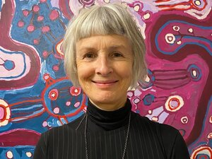

What is Contour 556?
Contour 556 is the water level of Lake Burley Griffin, which links the event in name as well as in purpose to the history of the central Canberra landscape. The artworks and installations selected for the festival respond in some way to Canberra’s history, from 50,000 years to the present day. contour 556 will therefore offer the Canberra, Australian and international community a unique opportunity to engage with and understand the layers of Canberra’s history through art.

NEIL HOBBS
Neil is a landscape architect and director of Harris Hobbs Landscapes, a Canberra based landscape architectural firm that has operated for over 30 years. In their practice they integrates art into the public realm, through memorial design, commissioned works, artwork installation, and collaborating with temporary events in the art and design field. Neil was the curator of Sculpture in the garden, at Lambrigg, in 2013, and was the curator of contour 556 2016 and 2018, which began as part of his PhD research that focused on the transformation of space into place, through temporary art interventions. He has strong community and design involvement as a board member variously of: The Australian Institute of Landscape Architects (2004-2013), president (2007-2009 and 2013); Open Gardens Australia Southern NSW/ACT Region (2003-2013) and Chair (2008–2011); The Gallery of Australian Design (Now the Alastair Swayn Foundation), since 2008; Capital Arts Patrons Organisation, 2012 - 2020; and Australian National Capital Artists Inc, (2014 2019). He is committed to the development of the ACT and regions Visual Arts sector through philanthropic activities such as the 2014 and 2017 Canberra Grammar School Small Sculpture Prize, and the ANU School of Arts and Design Harris Hobbs materials award to a post graduate student (awarded each year since 2007).
KARINA HARRIS
Karina is a landscape architect and director of Harris Hobbs Landscapes, a Canberra based landscape architectural firm that has operated for over 30 years. In their practice they integrates art into the public realm, through memorial design, commissioned works, artwork installation, and collaborating with temporary events in the art and design field.
She has strong community and design involvement as Chapter President of The Australian Institute of Landscape Architects (2012-2014) and a board member of Canberra Contemporary Art Space since 2008. She is committed to the development of the ACT and regions Visual Arts sector through philanthropic activities such as the 2014 and 2017 Canberra Grammar School Small Sculpture Prize, and the ANU School of Arts and Design Harris Hobbs materials award to a post graduate student (awarded each year since 2007).

PAUL CRAWFORD
Paul Crawford is a projects and real estate partner with international law firm King & Wood Mallesons where he advises both private and government clients around Australia on a diverse range of real estate matters. Having moved to Canberra to attend the Australian National University he now considers himself, some 34 years later, almost a local. He graduated the ANU with degrees in economics and law, and served on the board of a community organisation in the disability sector for a number of years. Paul is excited to be involved with this special event and its celebration of public art in our unique city.

GEORGE KATHEKLAKIS
George is the Managing Director of KDN Group, a local Canberra based business that specialises in Property Development, Management and Investment. With experience in the Australian property and design sector that spans over 25 years, George remains driven in the delivery of excellent design and urban environments that support and promote sustainable and integrated communities at all levels.
Recent award winning developments George has directed include Linq Apartments in Belconnen, a 248 unit apartment development promoting high quality design and energy efficient apartments surrounding an internal deep root garden courtyard, and Winyu House in Gungahlin Town Centre, housing the ACT Government in an atrium centred office environment that promotes abundant daylighting of the workplace and the transparent visual and physical connectedness between Government administration and community.
George’s substantial contributions to the property sector both locally and at the National level have been acknowledged with the award of Honorary Life Membership to the Property Council of Australia. He actively promotes the incorporation of locally based art installations into the built environment and is a staunch supporter of Canberra as the Nation’s symbolic, political and cultural heart.

JORDAN EVANS-TSE
Jordan Evans-Tse is a multidisciplinary designer at Place Logic, a local urban design and landscape architecture firm. Born and raised in Canberra, Jordan has always felt a deep connection to this city, its rolling hills, and public open spaces and to the cultural institutions that also call Canberra home. Human-centred and sustainable design principles are key to her design practice and she is a proponent of projects that celebrate the unique characteristics of our Nation’s Capital. Since graduating in 2011 with a Bachelor of Arts in Architecture, Jordan has applied her transferable and diverse skill set to landscape architecture, interior architecture, exhibition, and graphic design projects both locally and internationally.
Through her work as a freelance exhibition designer, Jordan has designed exhibitions for multiple galleries and museums across Australia and internationally. Recent exhibitions include Terminus by Jess Johnson and Simon Ward at the National Gallery of Australia, Heide MOMA (Vic), Tauranga Art Gallery (NZ) and The Dowse Art Museum, (NZ), Neon Meat Dream at Nanzuka Underground (Japan) and Don’t Stop Now: Fashion Photography Next at Fotografiemuseum (the Netherlands).
Jordan is well connected to Canberra’s arts community having worked at several of Canberra’s design, arts and cultural institutions including the Gallery of Australian Design, the Canberra Glassworks, and the National Gallery of Australia. Whilst working for Neil Hobbs and Karina Harris at Harris Hobbs Landscapes, Jordan became involved in the inaugural 2016 contour 556 festival and in 2018 she was involved in the design and production of the festival’s graphic, exhibition, and promotional material. Jordan is now involved in the festival in a new capacity as a member of the contour 556 board.

CHRISTINE WALLACE
Dr Chris Wallace is Associate Professor, 50/50 By 2030 Foundation, Faculty of Business, Government and Law, University of Canberra, where she is concerned with structural solutions for gender equity in public sector leadership and political representation. Wallace works in modern and contemporary political, international and global history with special reference to leadership, transnational lives, and transformational change and the information strategies underlying it.
She is the author of several books including a historicisation of the Australian Labor Party's 2019 federal election loss, How To Win An Election (2020); a biography of maverick feminist Germaine Greer, Greer, Untamed Shrew (1997); a biography of the then crusading neoliberal policy exponent John Hewson during his Opposition leadership in the early 1990s, Hewson: A Portrait (1993); an exploration of the intense 30 year-long relationship between cricketer Don Bradman and his confidante, journalist Rohan Rivett, The Private Don (2004); and on the left-wing Canberra poster collective, Megalo, Megalomania: 33 years of posters made at Megalo Print Studio 1980-2013 (2013). She is a Visiting Fellow at the National Centre of Biography, School of History ANU, and an associate of the ANU Centre for Digital Humanities. Wallace is the National Archives of Australia Cabinet Historian 2020-2022.

KEVIN MILLER
Kevin Miller is a director of CCJ Architects which is an evolution of Collard Clarke Jackson, an architectural practice established in Canberra in the 1960s. CCJ has completed a number of public, community and arts related projects in Canberra and the surrounding region including (recently) the Link at Strathnairn Arts, GAD at Commonwealth Place, refurbishment of Goulburn Regional Gallery and the refurbishment of the Tuggeranong Arts Centre. The practice actively pursues environmental best practice and the incorporation of artworks within its large range of project types.
Kevin is also a practicing photographic artist and recently completed a PHD in visual arts at the School of Art and Design at the ANU, a research project that incorporates examples of unique site specific artworks from Japan. He has been a finalist in the National Photographic Portrait Prize and the Olive Cotton award, and has been a regular exhibitor at ArtNotApart. He has also participated in a number of community and environmental arts projects such as Engaging Visions and the centenary of Canberra project, Unmade Edges – Distinctive places.

HEESEON JUNG
Heeseon Jung is a Landscape technician at Harris Hobbs Landscapes (HHL) and assist the team in realising their visions in technical and visually appealing drawings. She is well-versed in industry design tools to produce concepts and detailed design documentation, as well as web / print publications for HHL and affiliated events such as contour 556.
Heeseon was involved in the 2020 contour 556 festival and has supported the design, production, and maintenance of the festival’s website, and publication materials. Heeseon is passionate about design and how it affects the physical world we interact in.